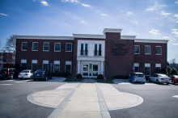
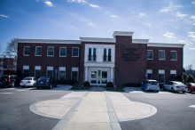

The Bud Robinson building is home to Offices of the Center for Student Development (Career Services, Disability Services, Academic Services), Nineteen 01 Coffee Shop, Fireside Room, computer lab, computer stations, and a classroom. This 13,000-square-foot facility now houses the Oasis (formerly Academic Support), First- and Second-year Experience Programs, Career Services, Personal Counseling Services, Disability Services, the testing center, non-traditional student services, and the Center for Teaching and Learning. Located on Lester Ave, Nashville, TN 37210, the Bud Robinson location is the ideal place to grab a coffee while taking advantage of all the services offered in the building. This is the original location for 1901 since the opening of the new location in Waggoner Library.